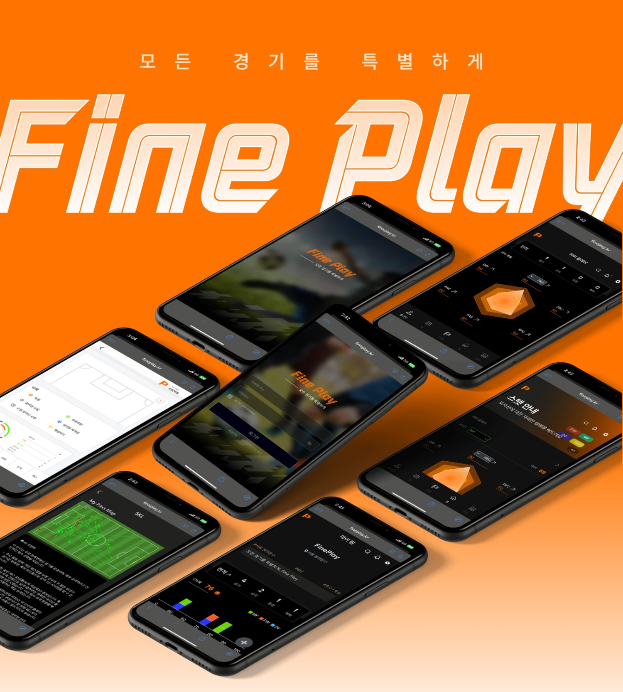
Fine Playby Fine Ludens
경기의 핵심 장면을자동 분석하는생활스포츠 AI 플랫폼
Fine Play는 경기 영상을 업로드하면 하이라이트 선별, 퍼포먼스 분석, 리포트 생성을 한 흐름으로 연결해 팀과 선수가 더 빠르게 경기를 이해하도록 돕습니다.



Fine Play는 경기 영상을 업로드하면 하이라이트 선별, 퍼포먼스 분석, 리포트 생성을 한 흐름으로 연결해 팀과 선수가 더 빠르게 경기를 이해하도록 돕습니다.
Problem
경기 영상은 늘었지만 분석으로 이어지는 경로가 없습니다.
경기 영상은 많지만 대부분 단순 시청으로 끝나고, 분석 가능한 데이터로 이어지지 않습니다.
경기별 수작업 분석은 많은 시간이 들고 반복 운영이 어려워 실무 적용성이 낮습니다.
전문 코칭·분석 리소스가 제한되어, 생활스포츠 참여자는 성장 피드백을 받기 어렵습니다.
세 단계가 하나의 흐름으로 연결됩니다.
핵심 장면만 선택 분석해 프레임 처리량을 줄이고 분석 효율을 높입니다. xH(Expected Highlight) 기준으로 공격 전개와 결정적 상황을 우선 선별해, 처음부터 전체 영상을 반복 확인하지 않아도 바로 의미 있는 장면에 집중할 수 있습니다.
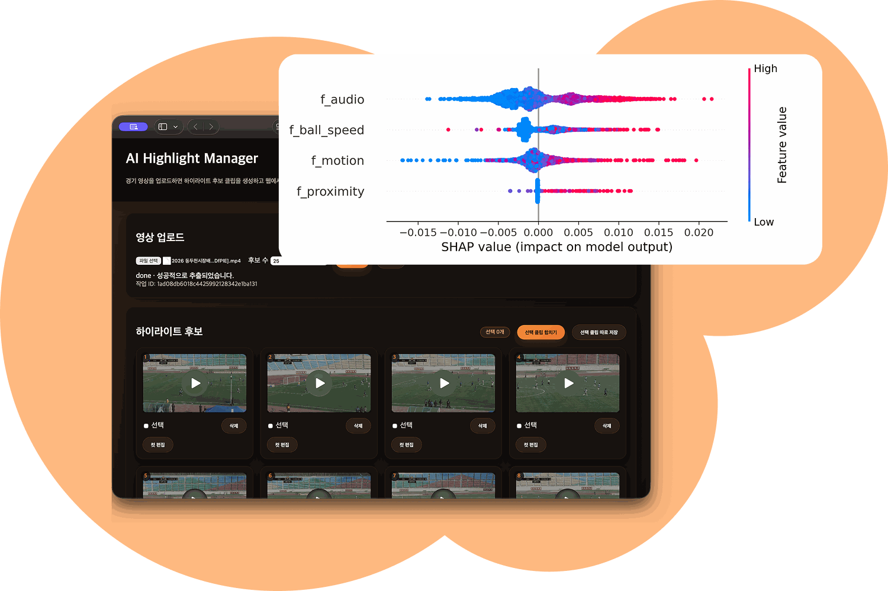
패스, 슈팅, 전개 기여도를 플레이 단위로 분석해 맥락 중심 리포트를 제공합니다. 단순 스탯 나열이 아니라 경기 흐름 안에서 어떤 선택이 찬스를 만들었는지 시각적으로 보여줘, 선수와 코치진이 개선 포인트를 더 빠르게 공유할 수 있습니다.
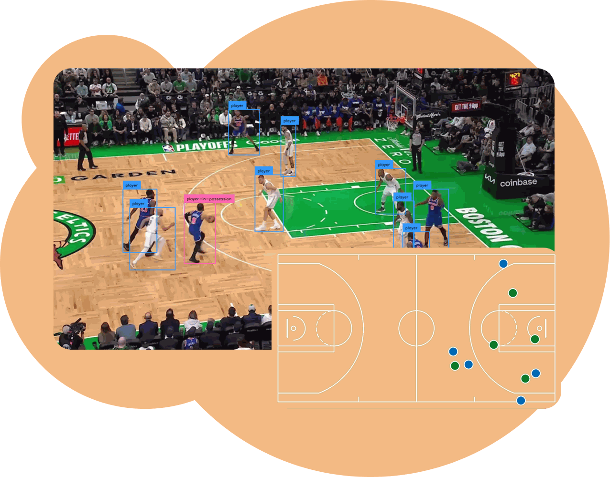
분석 결과를 리포트와 SNS 공유형 콘텐츠로 연결해 사용자 참여를 확대합니다. 경기 직후 팀 운영, 선수 피드백, 대회 홍보에 바로 활용할 수 있는 형태로 자동 가공됩니다.
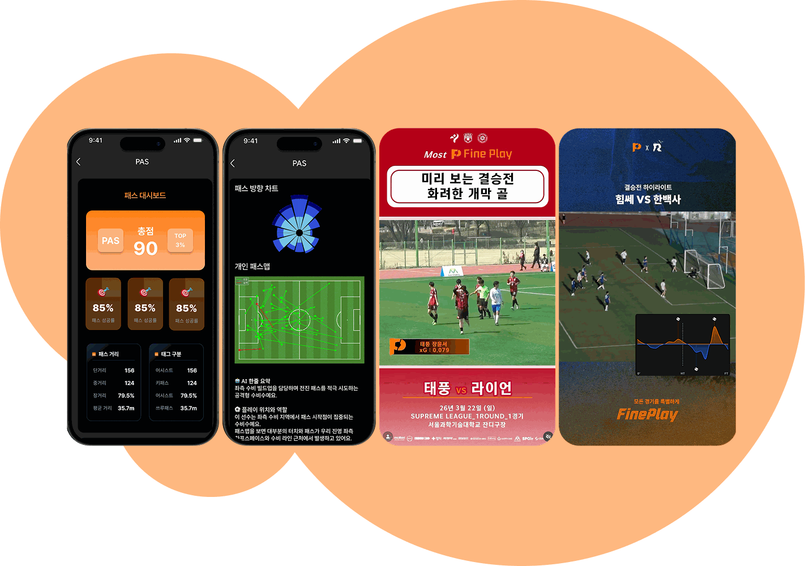
분석 결과는 선수 개인의 점수에서 팀·대회 기록까지 하나의 앱 안에서 이어집니다.
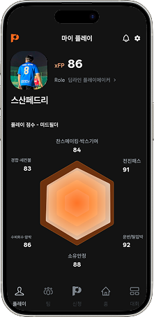
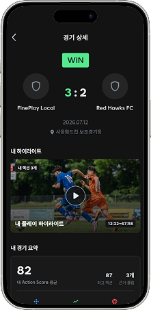
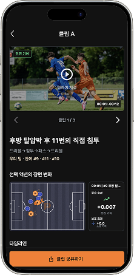
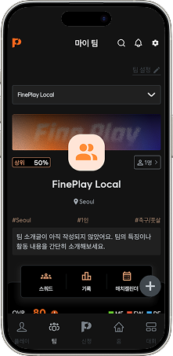
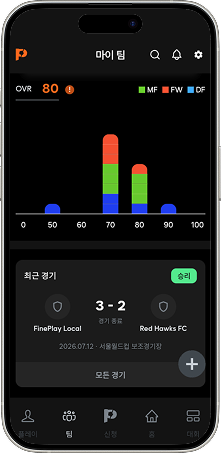
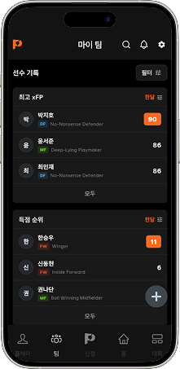
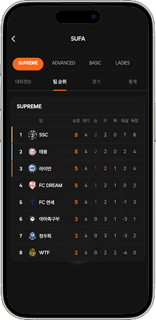
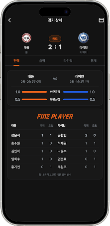
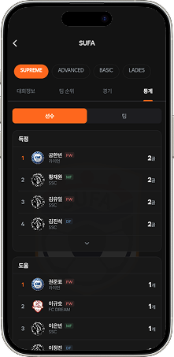
Technology

mAP@50
88.5객체 탐지 성능Precision
93.5탐지 정확도Recall
83.6핵심 장면 포착률대한축구협회 중계를 제작하는 ITOP Sports와 협업해 WK리그·K3리그 중계 화면에 쓰이는 점유율·공격 방향·슈팅 xG/xGOT·매치 도미넌스를 API로 공급하고 있습니다. 같은 기술을 대학·지역 대회로 가져오는 것이 Fine Play입니다.